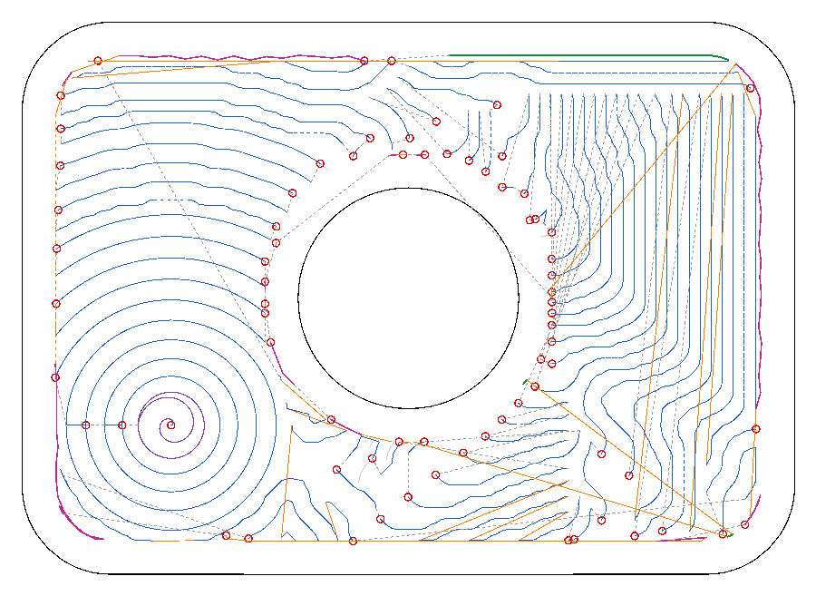
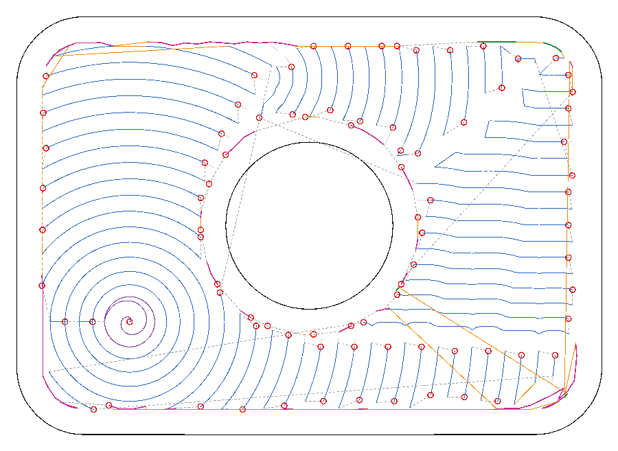

(a) curvature-spaced wraps (state at v4)

pocket / geodesic_curv
pieces: 1
cut length: 1343.7 mm
keep-down links: 173 (382.7 mm)
entries (plunges): 63
retracts (lifts to safe Z, last included): 63
pass load (planner readout, replay measure SweptWidth): max 0.4677 vs ceiling 0.3626; 2 of 3250 steps over; 0 exempt plunge-departure steps
both measures of the emitted steps (fraction of D, ceiling 0.3626): swept width max 0.4677, 2 over; area per mm max 0.6094, 817 over
over: residue mop cut (segment 134) from (50.91, 38.26) to (51.13, 37.54), reading 0.4526
over: residue mop cut (segment 134) from (54.57, 32.31) to (55.24, 31.96), reading 0.4677
load by class, emitted plan (replay measure: max reading, steps over of steps; then swept width and area per mm side by side):
starter: max 0.3114, 0 of 160; swept max 0.3114, 0 over; area max 0.4427, 6 over
clearing: max 0.3563, 0 of 1788; swept max 0.3563, 0 over; area max 0.6094, 682 over
clearing link: max 0.3221, 0 of 25; swept max 0.3221, 0 over; area max 0.4482, 4 over
residue contour link: max 0.2271, 0 of 20; swept max 0.2271, 0 over; area max 0.1834, 0 over
residue contour: max 0.3333, 0 of 567; swept max 0.3333, 0 over; area max 0.5260, 7 over
wall pass link: max 0.3439, 0 of 74; swept max 0.3439, 0 over; area max 0.4599, 1 over
wall pass: max 0.3333, 0 of 21; swept max 0.3333, 0 over; area max 0.4565, 3 over
residue mop: max 0.4677, 2 of 349; swept max 0.4677, 2 over; area max 0.5694, 114 over
residue mop link: max 0.2395, 0 of 246; swept max 0.2395, 0 over; area max 0.2463, 0 over
load by class, raw plan (replay measure: max reading, steps over of steps; then swept width and area per mm side by side):
starter: max 0.3114, 0 of 160; swept max 0.3114, 0 over; area max 0.4427, 6 over
clearing join: max 0.9460, 89 of 113; swept max 0.9460, 89 over; area max 1.0784, 96 over
clearing wrap: max 0.9300, 146 of 2545; swept max 0.9300, 146 over; area max 1.1288, 1352 over
clearing link: max 0.9571, 25 of 134; swept max 0.9571, 25 over; area max 0.9781, 27 over
cascade (replay model on the raw plan, read cell 0.500 mm): 876 refusals, 663 cascades, 213 intrinsic; intrinsic in the first quantum over the ceiling (c, c + cell/D]: 56
clearing join: refused 104, cascade 17, intrinsic 87 (max planned reading 0.9460)
clearing wrap: refused 763, cascade 640, intrinsic 123 (max planned reading 0.9300)
clearing link: refused 9, cascade 6, intrinsic 3 (max planned reading 0.4080)
first refusal of each producer piece: 131 pieces, 56 of them cascades; the first ten:
entries by producer: starter 1, clearing at a lead-in (L) 0, clearing at a wrap end (join) 34, clearing mid-wrap (replay split) 12, residue contour 6, wall pass 0, residue mop 10, other 0
(a) + re-seed from the cleared area (C9)


pocket / geodesic_curv_reseed
pieces: 1
cut length: 1598.5 mm
keep-down links: 143 (411.6 mm)
entries (plunges): 74
retracts (lifts to safe Z, last included): 74
pass load (planner readout, replay measure SweptWidth): max 0.3563 vs ceiling 0.3626; 0 of 3996 steps over; 0 exempt plunge-departure steps
both measures of the emitted steps (fraction of D, ceiling 0.3626): swept width max 0.3563, 0 over; area per mm max 0.6094, 697 over
load by class, emitted plan (replay measure: max reading, steps over of steps; then swept width and area per mm side by side):
starter: max 0.3114, 0 of 160; swept max 0.3114, 0 over; area max 0.4427, 6 over
clearing: max 0.3563, 0 of 3342; swept max 0.3563, 0 over; area max 0.6094, 684 over
clearing link: max 0.3146, 0 of 167; swept max 0.3146, 0 over; area max 0.4201, 2 over
wall pass link: max 0.1583, 0 of 37; swept max 0.1583, 0 over; area max 0.2917, 0 over
wall pass: max 0.0286, 0 of 37; swept max 0.0286, 0 over; area max 0.2240, 0 over
residue mop: max 0.3484, 0 of 97; swept max 0.3484, 0 over; area max 0.5208, 5 over
residue mop link: max 0.1045, 0 of 156; swept max 0.1045, 0 over; area max 0.1625, 0 over
load by class, raw plan (replay measure: max reading, steps over of steps; then swept width and area per mm side by side):
starter: max 0.3114, 0 of 160; swept max 0.3114, 0 over; area max 0.4427, 6 over
clearing join: max 0.9384, 34 of 42; swept max 0.9384, 34 over; area max 1.0080, 37 over
clearing wrap: max 0.9441, 134 of 3378; swept max 0.9441, 134 over; area max 1.0533, 861 over
clearing link: max 0.9516, 64 of 555; swept max 0.9516, 64 over; area max 1.0456, 64 over
cascade (replay model on the raw plan, read cell 0.500 mm): 106 refusals, 20 cascades, 86 intrinsic; intrinsic in the first quantum over the ceiling (c, c + cell/D]: 5
clearing join: refused 30, cascade 0, intrinsic 30 (max planned reading 0.9384)
clearing wrap: refused 43, cascade 18, intrinsic 25 (max planned reading 0.9441)
clearing link: refused 33, cascade 2, intrinsic 31 (max planned reading 0.9516)
first refusal of each producer piece: 80 pieces, 4 of them cascades; the first ten:
first: clearing join (segment 4) from (15.50, 18.50) to (14.06, 18.50), replay reading 0.8333, planned reading 0.8333, intrinsic, 4.44 mm from the seed
first: clearing join (segment 4) from (12.47, 18.50) to (11.62, 18.50), replay reading 0.6667, planned reading 0.6667, intrinsic, 6.88 mm from the seed
first: clearing wrap (segment 4) from (11.62, 18.50) to (10.77, 18.50), replay reading 0.8333, planned reading 0.8333, intrinsic, 7.73 mm from the seed
first: clearing link (segment 5) from (8.66, 19.94) to (8.33, 21.37), replay reading 0.3737, planned reading 0.3737, intrinsic, 10.57 mm from the seed
entries by producer: starter 1, clearing at a lead-in (L) 0, clearing at a wrap end (join) 63, clearing mid-wrap (replay split) 0, residue contour 0, wall pass 0, residue mop 10, other 0
re-seed piece 0: 47 re-seeds, 48 fields in use, stop Finished
(a) + split at the meeting line (C11)


pocket / geodesic_curv_split
pieces: 1
cut length: 1173.8 mm
keep-down links: 161 (232.8 mm)
entries (plunges): 84
retracts (lifts to safe Z, last included): 84
pass load (planner readout, replay measure SweptWidth): max 0.3609 vs ceiling 0.3626; 0 of 2941 steps over; 0 exempt plunge-departure steps
both measures of the emitted steps (fraction of D, ceiling 0.3626): swept width max 0.3609, 0 over; area per mm max 0.6094, 897 over
load by class, emitted plan (replay measure: max reading, steps over of steps; then swept width and area per mm side by side):
starter: max 0.3114, 0 of 160; swept max 0.3114, 0 over; area max 0.4427, 6 over
clearing: max 0.3609, 0 of 2404; swept max 0.3609, 0 over; area max 0.6094, 876 over
clearing link: max 0.2914, 0 of 20; swept max 0.2914, 0 over; area max 0.4482, 4 over
wall pass link: max 0.0000, 0 of 47; swept max 0.0000, 0 over; area max 0.0188, 0 over
wall pass: max 0.0723, 0 of 13; swept max 0.0723, 0 over; area max 0.3073, 0 over
residue mop link: max 0.1282, 0 of 186; swept max 0.1282, 0 over; area max 0.1719, 0 over
residue mop: max 0.3597, 0 of 111; swept max 0.3597, 0 over; area max 0.5451, 11 over
load by class, raw plan (replay measure: max reading, steps over of steps; then swept width and area per mm side by side):
starter: max 0.3114, 0 of 160; swept max 0.3114, 0 over; area max 0.4427, 6 over
clearing join: max 0.9426, 99 of 117; swept max 0.9426, 99 over; area max 1.0707, 100 over
clearing wrap: max 0.8333, 100 of 2478; swept max 0.8333, 100 over; area max 1.0880, 1418 over
clearing link: max 0.9755, 31 of 134; swept max 0.9755, 31 over; area max 1.0881, 34 over
cascade (replay model on the raw plan, read cell 0.500 mm): 194 refusals, 69 cascades, 125 intrinsic; intrinsic in the first quantum over the ceiling (c, c + cell/D]: 17
clearing join: refused 102, cascade 8, intrinsic 94 (max planned reading 0.9426)
clearing wrap: refused 86, cascade 60, intrinsic 26 (max planned reading 0.8333)
clearing link: refused 6, cascade 1, intrinsic 5 (max planned reading 0.8972)
first refusal of each producer piece: 105 pieces, 29 of them cascades; the first ten:
first: clearing join (segment 4) from (15.50, 18.50) to (14.06, 18.50), replay reading 0.8333, planned reading 0.8333, intrinsic, 4.44 mm from the seed
first: clearing join (segment 4) from (12.47, 18.50) to (11.62, 18.50), replay reading 0.6667, planned reading 0.6667, intrinsic, 6.88 mm from the seed
first: clearing wrap (segment 4) from (11.62, 18.50) to (10.77, 18.50), replay reading 0.8333, planned reading 0.8333, intrinsic, 7.73 mm from the seed
first: clearing link (segment 5) from (8.66, 19.94) to (8.33, 21.37), replay reading 0.3737, planned reading 0.3737, intrinsic, 10.57 mm from the seed
entries by producer: starter 1, clearing at a lead-in (L) 0, clearing at a wrap end (join) 64, clearing mid-wrap (replay split) 3, residue contour 0, wall pass 0, residue mop 16, other 0
split piece 0: 2 fields in use; zone 3709 nodes (927.2 mm²), found as the nodes whose source-tracked path to the seed bends round an island, 2 front branches, 60 meeting-line cells; first region 32 levels, 44 wraps